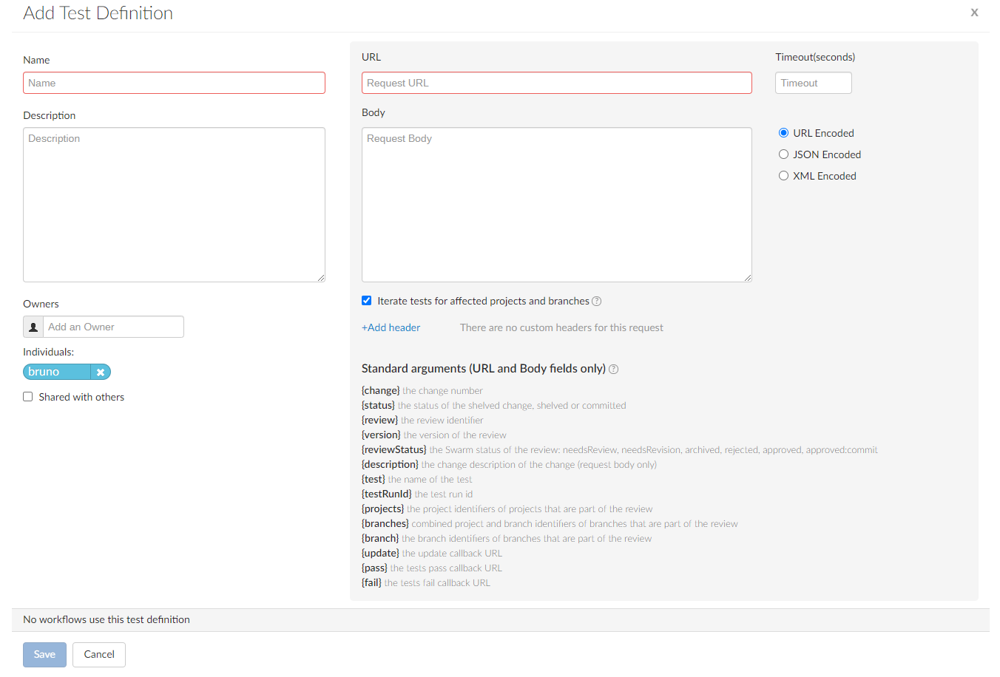
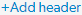

Add a test
- Swarm tests can be created by any Swarm user.
- Shared Swarm tests can be viewed by any Swarm user.
- Shared Swarm tests can be added to a workflow by any Swarm user that is authorized to edit the workflow.
- Shared Swarm tests can be added to the global workflow by any Swarm user that is authorized to edit the global workflow.
In earlier versions of Swarm, global tests were set in the Swarm config.php file. From Swarm 2020.1, tests are added to the global workflow on the Swarm Workflows page so that they operate as global tests. If you upgrade from an earlier version of Swarm, your global tests are automatically migrated. Each global test is migrated as follows: the owner is set as the Swarm admin user (not shared), the name is set to the original test name, the description is set to the original test title, and it is added to the Global Workflow.
Associate a test with a workflow to ensure that the test is run when a review associated with that workflow is either created/updated or submitted. Associate a test with the global workflow to ensure that the test is run whenever a Swarm review is either created/updated or submitted. This ensures that the global tests are enforced for all changes even if they are not part of a project.
To add a test:
-
On the Swarm Tests page, click the + Add Test Definition button.
The Add Test Definition page is displayed:
 - Enter a name for the test. This should be a unique name that is 1 to 32 characters in length.
- Optional: provide a description for the test.
-
You are automatically added as the owner of the workflow.
Optional: add more owners if required. This field auto-suggests groups, and users within Helix server as you type (up to a combined limit of 20 entries).
Important- A test must have at least one owner.
- If you remove yourself as an owner, you cannot edit this test configuration later unless you have super user rights.
-
Optional: if you want other Swarm users to be able to use this test, select the Shared with others checkbox.
TipLeave the checkbox unselected until you have proved that the test works as expected. This keeps the test private and stops other Swarm users using the test until you are happy with it. Once you are happy with the test, select the checkbox to share the test with other users.
-
Enter the test request URL that will trigger your test suite in the URL text box.
Special arguments are also available to pass details from Swarm to your test suite, see Pass special arguments to your test suite.
NoteHelix Plugin for Jenkins 1.10.11 and later: Swarm must send the parameters for the build to Jenkins as a POST request. To do this, enter the parameters in the Body and select URL Encoded.
- Optional: set a Timeout (in seconds) as an integer. The timeout is used when Swarm connects to your test suite. If a timeout is not set, the http_client_options timeout setting is used. By default, this is 10 seconds.
- Optional: specify parameters that your test suite requires in the request Body, select the encoding method using the radio buttons:
- URL Encoded: POST parameters are parsed into name=value pairs. This is the default.
- JSON Encoded: parameters are passed raw in the POST body.
- XML Encoded: parameters are passed in XML format in the POST body.
- Iterate tests for affected projects and branches checkbox
-
Project foo dev branch
-
Project foo main branch
-
Project bar dev branch
-
Project bar candidate branch
-
For information about the reviews test list, see Tests.
-
For information about private projects, see Private projects.
- Headers
- Click  in the headers area.
- Enter the name=value pair in the empty Header and Value boxes.
- The new header is saved when you click Save on the test page.
- Edit the name=value pair in the Header and Value boxes.
- The changes to the header are saved when you click Save on the test page.
-
Click Save.
NoteThe Save button is disabled if any required fields are empty.
Special arguments are also available to pass details from Swarm to your test suite, see Pass special arguments to your test suite.
Optional: select to create a separate test run for each branch and project the review is associated with. The details generated by the {projects}, {branches}, and {branch} arguments in the URL or Body are used in the test name displayed in the Tests dropdown on the review page.
For example: if you have the following {projects} and {branches} arguments in your test URL or Body:
'{projects}' => 'foo,bar',
'{branches}' => 'foo:dev,foo:main,bar:dev,bar:candidate',
Swarm will iterate through the arguments and create a test run for each of these project branches:
If Iterate tests for affected projects and branches is not selected, only one test will be run for the review, even if multiple branches and projects are associated with the review.
Private projects: if a test for a private project is added to a review because Iterate tests for affected projects and branches is selected for the test, Swarm honors the private project's permissions and displays it as Private project in the review's test list to users that do not have permission to view it.
Optional: enables you to specify name=value pairs to pass to the test suite.
Headers are only saved on the test when you click the Save button.
Add a header name=value pair:
Edit a header name=value pair:
Remove a header name=value pair from the test:
Click the Delete button next to the header to remove it from the test.
The header is removed immediately, no confirmation is requested. You must save the test to complete the header removal.
Pass special arguments to your test suite
You can include special arguments in the request URL and Body to pass Swarm information about the change that triggered the test run to your test suite. Swarm automatically replaces the arguments with the relevant Swarm information when it calls the test:
The curly braces {} are part of the arguments and must be used.
- {change} the change number
- {status} the status of the shelved change, shelved or committed
- {review} the review identifier
- {version} the version of the review
- {reviewStatus} the Swarm status of the review: needsReview, needsRevision, archived, rejected, approved, approved:commit
- {description} the change description of the change used to generate this update. {description} cannot be used in the URL, it can only be used in the request Body.
- {test} the name of the test
- {testRunId} the test run id
- {projects} the project identifiers of projects that are part of the review, null if the review is not part of a project. Comma separated if more than one project is involved in the review.
- {branches} the branch identifiers of branches that are part of the review. Branch identifiers are prefixed by a project identifier (with a colon : separator by default) if the branch is part of a project, null if the branch is not part of a project. Comma separated if more than one branch is involved in the review.
- {branch} the branch identifiers impacted by the review, comma-separated.
- {update} the update callback URL. You can include any or all of the following when calling the update url to update the test run: status, messages, and a url in the body that links to the CI system for that run. They should be formatted in JSON in the body of the POST request. Status: valid status values are running, pass, and fail. Messages: you can pass a maximum 10 messages, if you provide more than 10 messages only the first 10 are saved. Each message can contain a maximum of 80 characters, any messages with more than 80 characters will be automatically truncated. {update} is the preferred option for Swarm 2019.3 and later.
- If your build script has access to any messages related to the test execution, pass the messages to Swarm using the {update} URL. Swarm uses the provided message(s) to add to the test results.
- If your build script has access to the results of test execution, include a POST parameter called url when calling the update URL. Swarm uses the provided url to link reviews to the test results. Valid test status values are running, pass, and fail.
- The {update} callback url accepts a JSON body where you can specify any or all of the following: messages, url, and status.
- {pass} the tests pass callback URL. From Swarm 2019.3 and later, {update} is preferred. For more details, see the note below.
- {fail} the tests fail callback URL. From Swarm 2019.3, {update} is preferred. For more details, see the note below.
- {update}, {pass}, and {fail} are composed automatically by Swarm, they include Swarm's own per-review authentication tokens.
- When using {pass} and {fail}: if your build script has access to the results of test execution, include a GET or POST parameter called url when calling the pass or fail URLs. Swarm uses the provided url to link reviews to the test results.
- {projectNames} the project names of projects that are part of the review, null if the review is not part of a project. Comma separated if more than one project is involved in the review.
- {branchName} the branch name(s) impacted by the review, comma-separated.
Some CI systems, such as Jenkins, escape the default : character resulting in a failed test request. If your CI system needs a different separator character, your Swarm admin can configure Swarm to use that character.
Be careful when selecting your separator character, some characters can cause issues when calling tests. For example, a # character in a URL call means the branch is treated as an anchor and a % character in a JSON body encoding is escaped. Both of these will result in a failed test request.
For instructions on configuring the separator character, see project_and_branch_separator.
This argument is intended for use in project tests and is supported by workflow tests for backward compatibility. However, we recommend you use the {branches} argument for workflow tests going forwards.
If your test system cannot POST to Swarm, you cannot use update and you must use pass and fail instead.
When using {update}:
{
"messages" : ["My First Message", "My Second Message"],
"url" : "http://jenkins_host:8080/link_to_run",
"status": "pass"
}
Swarm 2019.3 and later still supports {pass} and {fail}, however {update} is preferred because you can also include a message with the test status.
Not iterated when the Iterate tests for affected projects and branches checkbox is selected for the test. If you want to iterate tests, use the {projects} argument.
Not iterated when the Iterate tests for affected projects and branches checkbox is selected for the test. If you want to iterate tests, use the {branches} argument.